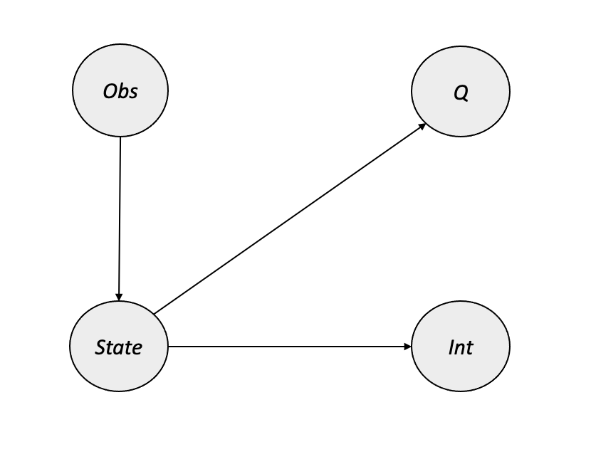

9 Reinforcement Learning
The application of causal methods within reinforcement learning is an area of active research and early adoption. This chapter will illustrate where causality fits into RL settings, what causal RL techniques exist, and the challenges that come with combining causal methods and reinforcement learning.
As we will see, there are many ways that causal inference can be integrated across many different contexts within RL — because of this, this chapter will be somewhat less consistently applied in nature than other chapters in this book. Here, we will outline several facets of the current state of causal RL, introduce the concepts, and provide direction for readers interested in going deeper.
9.1 Reinforcement Learning: A Brief Introduction
Reinforcement learning (RL) is a subfield of machine learning in which an agent learns to interact within an environment in such a way that it maximizes its expected reward. RL has enjoyed profound success in the world of game-playing, with models like AlphaGo Zero achieving superhuman performance using only self-play (Silver et al. 2017). More recent breakthroughs in game-playing have come in the games of Stratego, where DeepMind’s DeepNash agent achieves performance levels competitive with professional human players (Perolat et al. 2022); and Diplomacy, where Meta’s Cicero agent also achieves human-level performance using RL and techniques from language modeling (Bakhtin et al. 2022). Reinforcement learning applications have also appeared in various industry settings, including quantitative finance (Liu et al. 2018), self-driving car technology (Kiran et al. 2020), and computer hardware design (Mirhoseini et al. 2020). RL has even found applications within other ML domains, with OpenAI’s ChatGPT model utilizing a PPO model with human feedback for controlling generation quality (“ChatGPT: Optimizing Language Models for Dialogue” 2022).
Two primary approaches exist for framing reinforcement learning problems: in model-based RL, the agent attempts to learn a representation of how its world operates – specifically, it tries to model the transition between environment states separately from learning how it should act within the environment. Alternatively, the agents in model-free settings attempt to learn how to act without explicitly modeling the dynamics of the environment.
In online RL, models are updated incrementally through a process of trial and error as the agents interact with the environment and observe the consequences of their action. Conversely, offline RL leverages external datasets to approximate these functions without interacting with the environment (Levine et al. 2020).
One final distinction between RL approaches is between value-based and policy-based reinforcement learning. In value-based RL, the modeling task seeks to approximate the discounted future rewards from taking a particular action at a given state — the agent would then take the action which maximizes expected future rewards. On the other hand, policy-based RL attempts to model a probability distribution over all possible actions at a given state, essentially modeling the policy directly.
This is a very simplified overview of reinforcement learning, and other resources exist for readers seeking a deeper introduction. In addition to the previously covered concepts of causality, this chapter assumes some familiarity with the following:
- POMDPs: environments, observations, states, actions, and rewards
- Value-based RL: the Bellman equation and Q-learning
- Policy-based RL
- Multi-armed bandits
- Visual RL environments
Introductory material for these concepts can be found in an online lecture series from DeepMind’s David Silver 1 as well as in Sutton and Barto’s textbook (Sutton and Barto 2018) 2. Additionally, a free hands-on course in deep RL is available from Hugging Face (Simonini and Sanseviero 2022) 3.
9.2 Adding Causality to RL
As previously discussed, reinforcement learning is an area which has enjoyed success and generated excitement over the last several years. It is also an area which stands to benefit from adopting causal methods: online RL inherently contains a somewhat causal structure, in that the environment produces certain observations and outcomes based on the agent’s actions, and the agent seeks to learn the effects of its actions. The core idea of causal reinforcement learning is the introduction of causal information – via a causal graph and causal model – into an otherwise typical reinforcement learning setting.
One major benefit of causal inference is the ability to incorporate domain knowledge – this makes causality appealing for reinforcement learning, in which agent performance can be improved by incorporating outside knowledge of the world. For instance, RL applications within healthcare might benefit from knowledge about drug interactions which would be readily known by medical professionals — causality provides a method of encoding this prior knowledge.
Additionally, some of the most significant challenges in reinforcement learning at large include sample efficiency (how many episodes it takes for an agent to reach acceptable performance) and the ability to elegantly utilize offline data (for example, collected through observation of another agent in a similar system) with an agent performing in an online setting. As we will discuss in later sections, researchers in causal RL are using causal methods to address both of these problems.
Elias Bareinboim presented a tutorial on Causal Reinforcement Learning at NeurIPS 2020. Much of the progress in causal RL through late 2020 is captured in his tutorial, and many of the concepts included in this chapter are introduced there in some detail. Readers interested in going deeper on causal RL are encouraged to explore Bareinboim’s tutorial and other work further – his slides, notes, and videos from the CRL tutorial can be found at this link.
9.2.1 Causality for Smarter Agents
One of the primary areas of application in causal RL might be summarized by the notion of using causality to make agents “smarter” by…
- Helping agents understand their environment via a causal world model
- Adding causal bounds on regret expectations
- Improving action selection with causal knowledge
- Making agents more robust against observational interference or interruptions
While these approaches differ in their application within RL settings, they all contribute to improving sample efficiency, optimality, and agent reliability. We will go into greater depth on each of these in the following sections, starting with the inclusion of causal knowledge in an agent’s world model.
9.2.1.1 Better World Models in MBRL
In model-based reinforcement learning (MBRL), the models that seek to learn environment dynamics and state transitions are often called world models. These world models represent a significant area of application of causal RL because they provide a natural opportunity for embedding external knowledge (e.g., of a domain) into an agent.
In (Li et al. 2020) the authors introduce the concept of a counterfactual “dream world” in which the agent can imagine the results of hypothetical actions via do-interventions. Their methods are illustrated in physical environments (e.g. object placement) and show benefits in sample efficiency to reach optimal performance. Additionally, (Rezende et al. 2020) provides a general framework for creating causally correct partial models of future observations, which is especially appealing in cases where jointly modeling future observations fully would be intractable.
In a similar vein, (Lu, Meisami, and Tewari 2022) introduces the concept of Causal Markov Decision Processes (C-MDPs) which impose a causal framework over both the state transition and reward function within factored MDPs. The authors provide a regret bound given under the C-MDP, and they also introduce factorized methods for applications with high-dimensional action spaces and state spaces.
As we have seen, causal world models can be used in certain contexts where the variables underlying treatment, effect, and any other factors are explicitly given. However, this is not usually the case in visual RL environments where observations typically consist of pixels, and causal phenomena must be inferred based on changes in the pixel observation. In such settings, there is an additional need to express the observation in terms of high-level causal factors while also representing the relationships between them, a problem called causal induction. Fortunately, causal discovery methods can be used to learn the causal graph during online RL training; a survey of these methods can be found in (Ke et al. 2021). In this paper, the authors explore the current state of causal discovery within visual environments and provide new benchmarks to systematically evaluate causal induction methods. At a high level, the modeling approach consists of training an encoder for the visual observation (either an autoencoder or variational autoencoder) along with a “transition model” for the structure of the causal graph, which consists of either a graph neural network or a modular approach with directed edges. The authors first train the encoder and transition model based on trajectories produced by random actions, followed by use in a downstream RL agent. Their work shows that the modular inductive bias most closely models the explicit causal structure of the environment. However, it is unclear whether this translates to consistent improvement over non-causal techniques in visual RL, since the proposed benchmarks largely involve effects that immediately follow the agent’s action.
9.2.1.2 Dynamic Treatment Regimes
One application related to causal world models comes in healthcare, where RL can be used to develop dynamic treatment regimes (DTRs). DTRs are plans of care that change as a disease or condition progresses along with other relevant markers of the patient’s status. Specifically, DTRs describe how a healthcare provider should respond to an evolving picture of a patient’s health, making them useful for managing chronic diseases as well as an intriguing application for reinforcement learning (Chakraborty and Murphy 2014). When developing DTRs, incorporating prior knowledge of drug interactions or effects can reduce regret compared to standard exploration techniques, an ideal setting for causal modeling.
Junzhe Zhang and Elias Bareinboim have done much of the work on causal DTRs. (Zhang and Bareinboim 2019) first introduces an online RL approach which achieves near-optimality in learning DTRs when no observational data is available. This method, called UC-DTR, achieves near-optimal bounds on total regret without using causality – resulting in sub-linear total regret over the number of episodes. The authors then introduce Causal UC-DTR, which extends the UC-DTR algorithm by imposing causal bounds over state transition probabilities. In experiments with two-stage DTRs, both techniques vastly outperform random treatment selection, while Causal UC-DTR also produces lower cumulative regret than the non-causal technique.
Zhang and Bareinboim extend upon their work in causal DTRs in (Zhang 2020), in which they show that adding a causal diagram of the DTR environment, along with a corresponding structural causal model, can provide “regret that is exponentially smaller” than non-causal RL methods for finding the optimal DTR. They introduce two online algorithms:
- OFU-DTR uses “optimism in the face of uncertainty,” an optimistic planning approach which emphasizes unexplored or promising options during action selection, and adds causal knowledge of the environment to achieve tighter regret bounds
- PS-DTR combines the Bayesian method of posterior sampling with structural causal models (SCMs) in order to develop policies which maximize expected value based on the causal information in the SCMs
In addition to these online learning methods, Zhang and Bareinboim propose a process of learning optimal DTRs from observational data – effectively giving the causal models a “warm start” – prior to online experimentation. The learning process consists of using the causal graph \(\mathcal{G}\) to define the effect of treatment in the “offline” observational data. However, causal effects may not be identifiable from the observational data, so the authors use the technique of partial identification to produce causal bounds on the effects. Zhang and Bareinboim show that the introduction of informative causal bounds prior to online learning provides a dramatic improvement in both sample efficiency and the ultimate level of average regret.
Additional work on combining online and offline data can be found in Section 9.2.2.1.
9.2.1.3 Action Selection and Exploration
Another area where causality can aid in the reinforcement learning process is within action selection. This is an interesting area of opportunity because it is applicable within both model-based and model-free RL settings.
(Seitzer, Schölkopf, and Martius 2021) introduces the concept of causal influence detection, a technique that uses causal inference to better understand when an agent actually has the ability to impact its surroundings – as well as how that relationship changes over time and in different contexts. For example, consider an environment in which the agent is a robotic arm whose objective is to pick up and move an item; the agent has no influence over the position of the item unless its hand is close to the item’s location. The authors address this problem by creating a measure of causal action influence (CAI) which is based on an approximation of conditional mutual information within the state transition dynamics. The authors show that in robotic control environments (e.g. FetchPickAndPlace from OpenAI’s Gym), their methods provide a significant efficiency gain in terms of sample efficiency over standard \(\epsilon\)-greedy action sampling. However, this method requires full observability as well as the ability to factorize the state into causal variables.
Another paper (Sun and Wang 2022) uses causal methods to prune redundant actions within continuous control environments, with the goal of improving exploration efficiency. The authors modify the temporal difference (TD) loss, which is commonly used to train the critic component of an Actor-Critic model, by using structural causal models (SCMs) to identify causally relevant actions. The experiments in this paper center around the injection of redundant or irrelevant actions into standard continuous control problems (e.g. LunarLander in the OpenAI Gym), and they illustrate that the causal methods (and the dynamic method Dyn-SWAR in particular) consistently outperform standard TD agents when redundant actions are present.
9.2.1.4 Robustness
Causality can also be used to improve RL agents’ resilience against interruptions or problems in their environments. In (Yang et al. 2021), the authors use causal inference for observational interference to create an extension of deep Q-networks (DQNs) that is more robust to issues such as a blackout or lag in a visual environment. Their Causal Inference Q-Network (CIQ) is trained alongside a classifier of observational interference so that it can estimate during evaluation/inference whether each new observation is affected by an interference. CIQ makes uses causal inference to construct a more informative version of the interfered state, and it uses the interference label (during training) or classifier prediction (during inference) to route the modified state information to the appropriate neural network for \(Q\) estimation. CIQ’s causal graph illustrates the relationship between interference and observation with the following components:
- \(State\): the unobserved source of observations, rewards, and observational interference (e.g. via hardware overheating or system lag)
- \(Obs\): the actual observation received by the agent (always observed)
- \(Int\): indicator showing whether the observation has been affected by an interference (only observed/known during training)
- \(Q\): the reward value at the current timestep (always observed)
During their experiments, the authors compare their method against a variety of standard DQNs as well as a DQN with a non-causal interference classifier. CIQ outperforms all baselines, with standard DQNs failing to reach acceptable performance when observational interference is introduced. Other methods with non-causal interference detection perform somewhat better than the standard baselines, but they do not reliably reach target performance. CIQ reaches target performance relatively quickly across environments with vector and pixel observations at an interference level of 20%, and its performance remains comparable to non-perturbed input until roughly 40% interference (based on the Cartpole environment).
9.2.2 Causality for Transfer Learning and Imitation Learning
Another area of opportunity for causality within reinforcement learning has to do with the combination of observed experience and interactive experience – that is, offline data and online interaction. This section focuses on two related but different concepts within causal RL: transfer learning (combining online RL with observational data) and imitation learning (observing and attempting to replicate another agent’s behavior). Applications in these areas involve challenging unknown factors, such as the reward model of the teaching agent in imitation learning, which sets the stage for causality to provide a benefit.
9.2.2.1 Transfer Learning: Combining Online and Offline Information
One of the biggest challenges in practical reinforcement learning is that online experimentation is often expensive, impractical, or impossible to do in meaningful applied settings. For example, it would be difficult and expensive to spend millions of hours experimenting “behind the wheel” of a self-driving car; similarly, a clinical decision support agent in a healthcare setting would raise ethical questions if it needed to test entirely random actions on actual patients. With increasing amounts of data available for use in the development of machine learning, a compelling idea arises: can we use some of these datasets to help our RL agents act more efficiently, optimally, or robustly? This is the root of the concept of transfer learning in reinforcement learning – the use of observational (or offline) data to aid in the performance of an agent in an experimental (or online) setting. However, two major challenges are present when trying to combine online and offline information; the first has to do with whether the offline data is informative to the online setting, and the second is whether differences in the data generating process can be handled by causal adjustments. The methods discussed in this section separate these challenges and show how causal techniques can assist.
One of the first works on using causality to combine observational and experimental data came in (Forney, Pearl, and Bareinboim 2017), which proposes a counterfactual approach to the “fusion” of the two types of data within a multi-armed bandit setting. In this paper, the authors approach the problem of unobserved confounders when relating the two data sources by using a counterfactual quantity called the effect of the treatment on the treated (ETT) to estimate the causal effect of the action upon the reward, which they combine with empirically observed results from experimentation. Their work shows that the baseline Thompson Sampling (TS) agent which uses only experimental data performs the worst, while their proposed method (combining observational, experimental, and counterfactual data) performs the best in terms of both cumulative regret and the rate of optimal action selection.
Bareinboim’s work in causal transfer learning continues in (Zhang and Bareinboim 2017), which applies transfer learning to multi-armed bandit settings in which causal effects cannot be identified with do-calculus. Zhang and Bareinboim provide an alternative approach for these settings where non-identifiability is an issue: use causal inference to derive bounds on the distribution of expected reward over the arms, and then use these bounds to identify the most promising actions. Their experiments show that when causal bounds derived from observational data are informative to the online system, causal transfer learning provides very significant efficiency gains over standard variants of Thompson Sampling and UCB. When the causal bounds are noninformative, the causal learners revert to the performance of the standard, non-causal methods (TS and UCB).
Moving beyond the setting of multi-armed bandits, (Gasse et al. 2021) follows a similar approach to Zhang and Bareinboim by creating causal bounds from a combination of observational and interventional data. However, their approach expands this idea to the world models of agents in MBRL settings, which aims to give agents a better understanding of the environment dynamics in arbitrary POMDPs.
(Wang, Yang, and Wang 2021) introduces a value iteration approach to improve sample efficiency by combining online and offline data in settings with confounded observational data. They propose a method called deconfounded optimistic value iteration (DOVI), which uses causal inference to adjust for confounded behavior observed in offline data. Similarly to (Zhang and Bareinboim 2017), the authors here show that informative observational data provably improves efficiency in the online setting.
9.2.2.2 Imitation Learning
Imitation learning differs from transfer learning in RL by focusing on learning to imitate another agent’s behavior rather than learning an original policy. This is related to transfer learning in that the high-level objective is to incorporate data produced by an external actor into the learning process, but the application is different due to the goal of behaving like another agent. Similarly to what we saw in the previous section, causality can provide a substantial benefit in dealing with tricky issues like unobservable confounders.
In (Zhang, Kumor, and Bareinboim 2020), the authors provide a framework which approaches the imitation learning problem from a causal inference perspective. The authors begin by using a causal graph to determine whether causal imitation is feasible in a given environment: specifically, they define imitability as the condition when a partially observable structural causal model (POSCM) can be used to uniquely compute the desired policy. Additionally, they provide an alternative approach which can be used when strict imitability does not hold; this method uses quantitative information derived from the observed trajectories in addition to the causal graph of the environment to overcome lack of strict imitability. (Kumor, Zhang, and Bareinboim 2021) build upon this work by extending causal imitation learning to sequential decision-making processes. In a similar manner, the authors provide a graphical framework for identifying whether imitation is possible in a given environment.
9.2.3 Causality for Agent Explainability and Fairness
We close this chapter on the combination of causality and reinforcement learning with a slightly different focus: instead of using causality to guide an agent’s learning or decision making, we will explore ways that causality can provide insight into why an agent behaves the way it does. Specifically, we will outline methods for understanding agent incentives, gaining explainability in RL, and how this contributes to the principle of model fairness within an RL context.
Model explainability is an area of active research and significant practical interest within the machine learning community; explainable models can be easier to justify in decision-making settings, and some industry applications (for example, in financial or healthcare settings) might require transparency. Explainability in RL focuses on gaining an understanding for what motivates an agent to select a specific action at a specific point in time. (Madumal et al. 2020) introduces an approach to RL explainability which generates explanations for agents’ decisions using counterfactuals. Their method is designed for model-free RL settings and is based on an SCM which captures the relationships between state variables and the action space. In an experiment within an environment based on the video game Starcraft, the authors perform a human study which shows that their counterfactual explanation method is perceived as being more trustworthy than other techniques.
Additional work in this area focuses on agent incentives, or the factors which influence the agent’s decision. This differs from the broader concept of explainability by formalizing the notion that an agent can be incentivized in different ways by different things, such as self-preservation or exploiting an opponent’s weaknesses. (Everitt et al. 2021) presents a framework for agent incentive analysis based on structural causal influence models (SCIMs), combinations of SCMs and causal influence diagrams, which map the possible influences that exist for a given agent’s decision making process. SCIMs provide a causal view of how observations translate to decisions, which in turn produce the “utility” for the agent. The authors introduce several concepts of agent incentives modeled by the graphical relationships within the SCIM:
- Materiality: whether the observation provides important information regarding utility nodes within the causal influence diagram
- Value of Information: whether the agent would benefit from seeing a given node prior to making the decision – this is a broader view of materiality which includes non-observable nodes
- Response Incentives: whether a node actually influences the optimal decision made by the agent
- The authors show that Response Incentives are closely related to the notion of counterfactual fairness, in that a model is counterfactually unfair if a sensitive variable (e.g. gender, race) unduly influences the model’s output
- Counterfactual fairness is covered in greater detail in Chapter 8
- Value of Control: whether an agent benefits by actively controlling a particular node
- Instrumental Control Incentives: whether an agent manipulates a particular node in order to achieve a utility
- This is the case if there exists a single directed path from the decision node \(D\) to the utility node \(U\) which only goes through the variable being manipulated by the agent \(X\): \(D \rightarrow X \rightarrow U\)
PyCID (Fox et al. 2021) is a Python library which implements causal influence diagrams; working examples of the SCIM framework described in (Everitt et al. 2021) are available in the Jupyter notebooks on the PyCID GitHub.
Explainability for an RL agent allows researchers to understand the reasons behind the agent’s actions. As discussed previously, this has significant appeal within many practical settings, but it also provides a way to assess the fairness of a given agent. Fairness in ML has many facets, and as reinforcement learning continues to find application in impactful areas, it becomes increasingly important to have tools available for understanding whether an agent is unfairly motivated. These causal tools are critical steps toward understanding agent incentives and ensuring fairness and safety in RL settings.
9.3 Conclusions and Open Problems
This chapter has given a broad view of the various intersections between causal inference and reinforcement learning. As we have seen, causal information can help agents learn more quickly, aid in transfer between offline and online settings, and provide insight into incentives. However, challenges exist which prevent the large-scale adoption of causal reinforcement learning, such as computational challenges, lack of causal identifiability in some environments, and intractability of causal methods in very high dimensional settings. Despite the challenges, the methods outlined in this chapter illustrate that causality can be a very helpful tool for improving agent performance in many RL settings.
Bakhtin, Anton, Noam Brown, Emily Dinan, Gabriele Farina, Colin Flaherty, Daniel Fried, Andrew Goff, et al. 2022. “Human-Level Play in the Game of Diplomacy by Combining Language Models with Strategic Reasoning.” Science 0 (0): eade9097. https://doi.org/10.1126/science.ade9097.
Chakraborty, Bibhas, and Susan A. Murphy. 2014. “Dynamic Treatment Regimes.” Annual Review of Statistics and Its Application 1 (1): 447–64. https://doi.org/10.1146/annurev-statistics-022513-115553.
“ChatGPT: Optimizing Language Models for Dialogue.” 2022. OpenAI. https://openai.com/blog/chatgpt/.
Everitt, Tom, Ryan Carey, Eric Langlois, Pedro A Ortega, and Shane Legg. 2021. “Agent Incentives: A Causal Perspective.” arXiv. https://doi.org/10.48550/ARXIV.2102.01685.
Forney, Andrew, Judea Pearl, and Elias Bareinboim. 2017. “Counterfactual Data-Fusion for Online Reinforcement Learners.” In Proceedings of the 34th International Conference on Machine Learning, edited by Doina Precup and Yee Whye Teh, 70:1156–64. Proceedings of Machine Learning Research. PMLR. https://proceedings.mlr.press/v70/forney17a.html.
Fox, James, Tom Everitt, Ryan Carey, Eric Langlois, Alessandro Abate, and Michael Wooldridge. 2021. “PyCID: A Python Library for Causal Influence Diagrams.” In Proceedings of the 20th Python in Science Conference, edited by Meghann Agarwal, Chris Calloway, Dillon Niederhut, and David Shupe, 43–51. https://doi.org/10.25080/majora-1b6fd038-008.
Gasse, Maxime, Damien Grasset, Guillaume Gaudron, and Pierre-Yves Oudeyer. 2021. “Causal Reinforcement Learning Using Observational and Interventional Data.” arXiv. https://doi.org/10.48550/ARXIV.2106.14421.
Ke, Nan Rosemary, Aniket Didolkar, Sarthak Mittal, Anirudh Goyal, Guillaume Lajoie, Stefan Bauer, Danilo Rezende, Yoshua Bengio, Michael Mozer, and Christopher Pal. 2021. “Systematic Evaluation of Causal Discovery in Visual Model Based Reinforcement Learning.” arXiv. https://doi.org/10.48550/ARXIV.2107.00848.
Kiran, B Ravi, Ibrahim Sobh, Victor Talpaert, Patrick Mannion, Ahmad A. Al Sallab, Senthil Yogamani, and Patrick Pérez. 2020. “Deep Reinforcement Learning for Autonomous Driving: A Survey.” arXiv. https://doi.org/10.48550/ARXIV.2002.00444.
Kumor, Daniel, Junzhe Zhang, and Elias Bareinboim. 2021. “Sequential Causal Imitation Learning with Unobserved Confounders.” In Advances in Neural Information Processing Systems, edited by M. Ranzato, A. Beygelzimer, Y. Dauphin, P. S. Liang, and J. Wortman Vaughan, 34:14669–80. Curran Associates, Inc. https://proceedings.neurips.cc/paper/2021/file/7b670d553471ad0fd7491c75bad587ff-Paper.pdf.
Levine, Sergey, Aviral Kumar, George Tucker, and Justin Fu. 2020. “Offline Reinforcement Learning: Tutorial, Review, and Perspectives on Open Problems.” arXiv. https://doi.org/10.48550/ARXIV.2005.01643.
Li, Minne, Mengyue Yang, Furui Liu, Xu Chen, Zhitang Chen, and Jun Wang. 2020. “Causal World Models by Unsupervised Deconfounding of Physical Dynamics.” arXiv. https://doi.org/10.48550/ARXIV.2012.14228.
Liu, Xiao-Yang, Zhuoran Xiong, Shan Zhong, Hongyang Yang, and Anwar Walid. 2018. “Practical Deep Reinforcement Learning Approach for Stock Trading.” arXiv. https://doi.org/10.48550/ARXIV.1811.07522.
Lu, Yangyi, Amirhossein Meisami, and Ambuj Tewari. 2022. “Efficient Reinforcement Learning with Prior Causal Knowledge.” In Proceedings of the First Conference on Causal Learning and Reasoning, edited by Bernhard Schölkopf, Caroline Uhler, and Kun Zhang, 177:526–41. Proceedings of Machine Learning Research. PMLR. https://proceedings.mlr.press/v177/lu22a.html.
Madumal, Prashan, Tim Miller, Liz Sonenberg, and Frank Vetere. 2020. “Explainable Reinforcement Learning Through a Causal Lens.” Proceedings of the AAAI Conference on Artificial Intelligence 34 (03): 2493–2500. https://doi.org/10.1609/aaai.v34i03.5631.
Mirhoseini, Azalia, Anna Goldie, Mustafa Yazgan, Joe Jiang, Ebrahim Songhori, Shen Wang, Young-Joon Lee, et al. 2020. “Chip Placement with Deep Reinforcement Learning.” arXiv. https://doi.org/10.48550/ARXIV.2004.10746.
Perolat, Julien, Bart De Vylder, Daniel Hennes, Eugene Tarassov, Florian Strub, Vincent de Boer, Paul Muller, et al. 2022. “Mastering the Game of Stratego with Model-Free Multiagent Reinforcement Learning.” Science 378 (6623): 990–96. https://doi.org/10.1126/science.add4679.
Rezende, Danilo J., Ivo Danihelka, George Papamakarios, Nan Rosemary Ke, Ray Jiang, Theophane Weber, Karol Gregor, et al. 2020. “Causally Correct Partial Models for Reinforcement Learning.” arXiv. https://doi.org/10.48550/ARXIV.2002.02836.
Seitzer, Maximilian, Bernhard Schölkopf, and Georg Martius. 2021. “Causal Influence Detection for Improving Efficiency in Reinforcement Learning.” In Advances in Neural Information Processing Systems (NeurIPS 2021). https://arxiv.org/abs/2106.03443.
Silver, David, Julian Schrittwieser, Karen Simonyan, Ioannis Antonoglou, Aja Huang, Arthur Guez, Thomas Hubert, et al. 2017. “Mastering the Game of Go Without Human Knowledge.” Nature 550 (7676): 354–59. https://doi.org/10.1038/nature24270.
Simonini, Thomas, and Omar Sanseviero. 2022. “The Hugging Face Deep Reinforcement Learning Class.” GitHub Repository. https://github.com/huggingface/deep-rl-class; GitHub.
Sun, Hao, and Taiyi Wang. 2022. “Toward Causal-Aware RL: State-Wise Action-Refined Temporal Difference.” In Deep Reinforcement Learning Workshop NeurIPS 2022. https://openreview.net/forum?id=waLncuzMofp.
Sutton, R. S., and A. G. Barto. 2018. Reinforcement Learning, Second Edition: An Introduction. Adaptive Computation and Machine Learning Series. MIT Press. https://books.google.com/books?id=5s-MEAAAQBAJ.
Wang, Lingxiao, Zhuoran Yang, and Zhaoran Wang. 2021. “Provably Efficient Causal Reinforcement Learning with Confounded Observational Data.” In Advances in Neural Information Processing Systems, edited by M. Ranzato, A. Beygelzimer, Y. Dauphin, P. S. Liang, and J. Wortman Vaughan, 34:21164–75. Curran Associates, Inc. https://proceedings.neurips.cc/paper/2021/file/b0b79da57b95837f14be95aaa4d54cf8-Paper.pdf.
Yang, Chao-Han Huck, I-Te Danny Hung, Yi Ouyang, and Pin-Yu Chen. 2021. “Training a Resilient q-Network Against Observational Interference.” arXiv. https://doi.org/10.48550/ARXIV.2102.09677.
Zhang, Junzhe. 2020. “Designing Optimal Dynamic Treatment Regimes: A Causal Reinforcement Learning Approach.” In Proceedings of the 37th International Conference on Machine Learning, edited by Hal Daumé III and Aarti Singh, 119:11012–22. Proceedings of Machine Learning Research. PMLR. https://proceedings.mlr.press/v119/zhang20a.html.
Zhang, Junzhe, and Elias Bareinboim. 2017. “Transfer Learning in Multi-Armed Bandits: A Causal Approach.” In Proceedings of the Twenty-Sixth International Joint Conference on Artificial Intelligence, IJCAI-17, 1340–46. https://doi.org/10.24963/ijcai.2017/186.
———. 2019. “Near-Optimal Reinforcement Learning in Dynamic Treatment Regimes.” In Advances in Neural Information Processing Systems, edited by H. Wallach, H. Larochelle, A. Beygelzimer, F. dAlché-Buc, E. Fox, and R. Garnett. Vol. 32. Curran Associates, Inc. https://proceedings.neurips.cc/paper/2019/file/8252831b9fce7a49421e622c14ce0f65-Paper.pdf.
Zhang, Junzhe, Daniel Kumor, and Elias Bareinboim. 2020. “Causal Imitation Learning with Unobserved Confounders.” In Proceedings of the 34th International Conference on Neural Information Processing Systems. NIPS’20. Red Hook, NY, USA: Curran Associates Inc.
Available on the DeepMind website↩︎
See the course’s official GitHub repo for more information↩︎